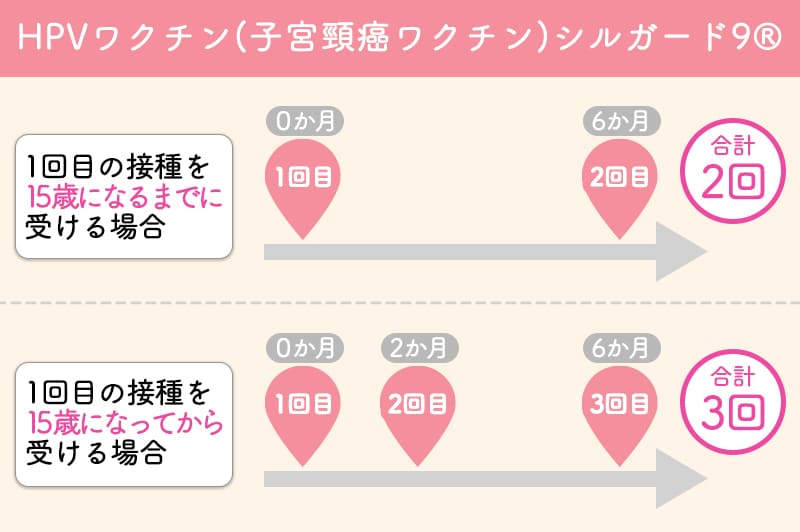

HPVワクチン(子宮頸癌ワクチン)シルガード9®予防接種
HPV（ヒトパピローマウイルス）は主に性行為によって感染するウイルスで、男女ともに多くの方がHPVに感染します。
HPVにはいくつかの種類（型）があり、そのうちの一部が子宮頸がんをはじめとした疾患の原因になります。
9価ワクチンである「シルガード9®」を接種することで、9つの型のHPVウイルス感染を防ぐことができ、子宮頸がん、中咽頭がん、肛門がん、先圭コンジローマなどの発症を予防できます。
| HPVワクチン(子宮頸癌ワクチン) | 接種回数 | 料金 |
|---|---|---|
| シルガード9®（9価） | 【15歳未満の方】2回、【15歳以上の方】3回 | 1回 24,546円（税抜） (税込 27,000円) |
対象となる方
- 定期接種対象者を除く、9歳以上の女性
- 9歳以上の男性
※当院は定期接種は対応できません。自費接種のみとなりますのでご注意ください。
※シルガード9®は、男性も接種可能なHPVワクチンです。
男性がシルガード9®を接種することで、中咽頭がん、肛門がん、尖圭コンジローマなどの感染予防が期待できます。
加えて、男性がHPVワクチンを接種することで、性交渉によるHPV感染から女性を守り、子宮頸がんの予防にもつながります。
接種スケジュール

上記のようなスケジュールが標準的ですが、体調によっては2回目・3回目の接種を遅らせても全く問題ありません。
合計で3回接種できれば、しっかりと効果が得られます。
接種後の相談先窓口について
接種後に体調の変化や気になる症状が現れたら、まずは当院にご相談ください。
また、HPVワクチン接種後に生じた症状の診療を行う協力医療機関がお住まいの都道府県ごとに設置されています。
協力医療機関の受診は、当院医師へご相談ください。
※協力医療機関についての詳細は、厚生労働省HP「ヒトパピローマウイルス感染症の予防接種後に生じた症状の診療に係る協力医療機関について」をご覧ください。
Q&A
- 定期接種ですでに4価ワクチンを3回接種済みですが、改めて9価を受けることは可能ですか？
- 可能です。予定通り4価を接種し、更に9価を接種しても特に有害となりません。大切なのは、4価でも9価でも、性交渉前に接種を完了していることです。
- 4価ワクチンを1回もしくは2回接種済みで、残りの回数を9価ワクチンで接種することは可能ですか？
- 可能です。4価ワクチンを途中まで接種している場合、残りの回数を9価ワクチンに切り替えて接種することを「交互接種」と言い、これは定期接種やキャッチアップ接種でも認められています。
ご予約方法
接種をご希望の方は、以下のいずれかの方法にてお問い合わせください。
- お問い合わせフォーム
- コールセンター
- 受付窓口
ご予約の際は「お名前、生年月日、年齢、ご予約希望の日時」をお知らせください。
※予約後のキャンセルはできません。
※ワクチンは取り寄せになります。1週間後以降のご予約希望日をご指定ください。